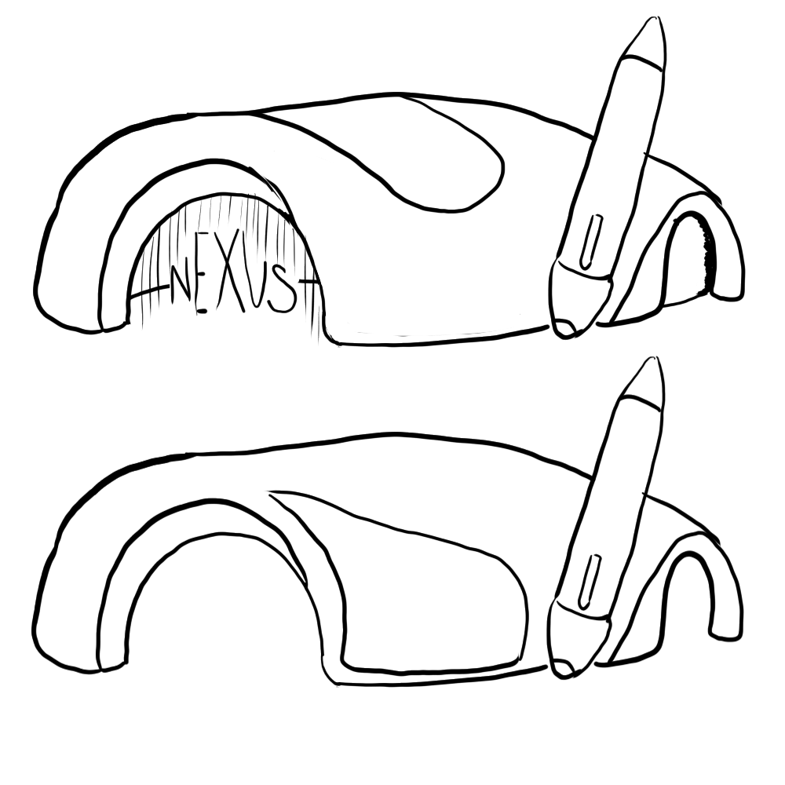

Análisis de
Referentes
Introducción
PresentaciónComo las buenas ideas también nacen de mirar lo que otros han creado, en este espacio reunimos diferentes proyectos, instalaciones y experiencias que nos inspiraron a imaginar cómo podría ser la nuestra. Exploramos sus formas, materiales, estructuras y maneras de interactuar con las personas, descubriendo detalles e ideas que nos ayudan a darle vida a una propuesta diferente, dinámica y llena de posibilidades.
Matriz de análisis de referentes
Documento originalFichas de referentes
12 fichasAnálisis y conclusiones visuales
CierreEl análisis de los referentes nos permitió ampliar nuestra perspectiva sobre las posibilidades de configuración de una instalación temporal, identificando diferentes soluciones formales, estructurales y espaciales que contribuyeron a orientar el desarrollo de nuestra propuesta. Entre los aprendizajes más significativos destacamos Al Bahar Towers, por su exploración de componentes geométricos articulados y superficies dinámicas; el Pabellón del Grupo Fuji, por su aproximación experimental a las estructuras temporales y su capacidad de generar espacios visualmente llamativos; y la Biósfera de Montreal, por la construcción de una envolvente espacial mediante la repetición y conexión de unidades geométricas. Estos referentes, junto con los demás proyectos estudiados, nos permitieron reconocer el valor de la modularidad, la transformación formal, la experimentación material y la organización de espacios que despierten curiosidad e inviten a la exploración.
A partir de estos aprendizajes, comenzamos a replantear nuestra propuesta inicial, buscando alejarnos de las configuraciones convencionales y desarrollar una instalación con mayor identidad visual, presencia espacial y capacidad de interacción, en la que su forma no solo responda a una necesidad funcional, sino que también contribuya a comunicar el propósito de acercar el Diseño Digital a los estudiantes y convertir su visita en una experiencia de descubrimiento.

